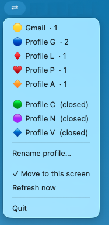

A tiny menu bar app that lives outside Chrome. One click brings all your profile's windows to the front, centered on the screen your mouse is already on.

If a profile has three open windows, all three come to the front — not just the last active one.
Windows are placed at 80% of the screen, centered, every time. No more hunting for a window buried behind something else.
On multi-monitor setups, windows move to whichever screen your cursor is on when you click. No dragging required.
Option+click a profile to minimize all other profiles' windows instantly. One context at a time.
The keyboard shortcut rotates through all your profiles — including ones with minimized windows, not just visible ones.
Clicking a profile with no open windows launches Chrome directly into it. Auto-detects, no manual setup.
Press ⌘§ to cycle through your open Chrome profiles without reaching for the mouse.
Requires macOS 12+, Google Chrome, and Python 3.10+.